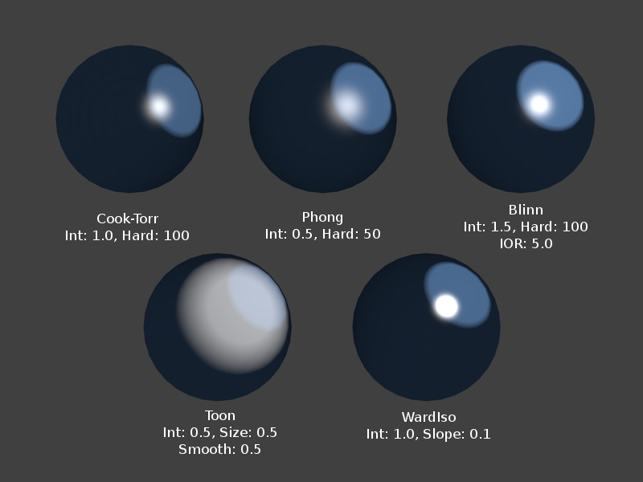
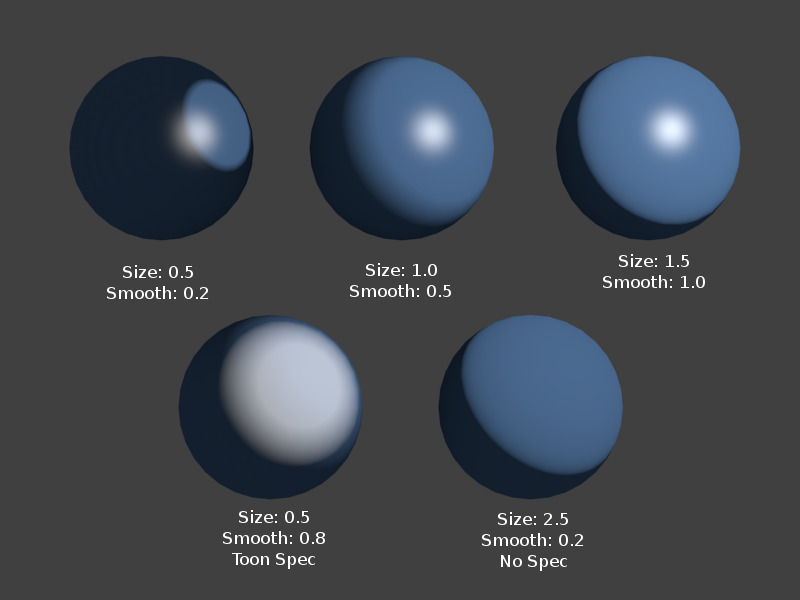
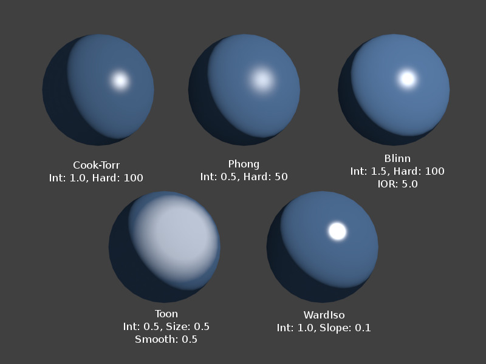

漫射着色器¶
参考
简单地说，漫射着色器决定了光线照射到材质表面后呈现的大致颜色。大多数的渲染器设计为模拟现实，从光照最强点到阴影区域从亮到暗，平滑衰减，不过Blender还提供了各种特殊效果的其他着色器。
通用选项¶
所有的漫射着色器都包含以下选项：
- 颜色
- 选择材质的基础 漫射颜色 。
- 强度
- 着色器的亮度，或者更准确的说，真正漫反射至相机的入射光能量。
- 渐变
- 用于为 材质 设置颜色范围，并定义颜色在表面的变化方式。具体参考 颜色渐变 。
技术细节¶
照射到物体表面，然后发生漫反射的光线会分散开来，也就是说，会均匀的向所有方向反射。这意味着不管 观察角度 如何，相机从该表面看到的光线都是等量的。该特性决定了散射光 与观察点无关 。当然，照射到该表面的光线数量还是取决于入射光角度的。如果照射到该表面的光线大多都发生漫反射，该表面将呈现粗糙外观(散射现象中的反射光线)。
散射现象中的反射光线。
Tip
着色器名称
传统上，一些着色器以第一个引入该模型的人物名称命名。
兰伯特¶
参考
{kind=link}
兰伯特着色器。
Blender的默认漫射着色器，通用的全面主力着色器，用于表现低等级的镜面反射。
- 约翰 海因里希 朗伯 (1728-1777)
- 是一位瑞士的数学家、物理学家和天文学家，发表了很多关于光线反射的著作，其中最著名的就是 比尔-朗伯定律 ，阐述了光线吸收的定律。
该着色器仅包含默认选项，决定用于反射的光线比例。默认为0.8，以使其他物体显得更亮。
{kind=link}
兰伯特漫射着色器设置。
奥伦-纳亚尔¶
参考
{kind=link}
奥伦-纳亚尔着色器。
奥伦-那亚尔对漫反射现象采用了某种程度上说更加 '物理' 物理的方法，因为它考虑了表面的微观粗糙度。 迈克尔 奥伦 和 Shree K. Nayar 他们的 反射模型 用于1990年代早期建立，是朗伯定律的泛化，广泛应用于计算机图形学。
{kind=link}
卡通效果¶
参考

不同规格的卡通着色器。 |

卡通着色器的变化。 |
卡通着色器是一个十分 '非物理' 的着色器，并非刻意山寨现实，而是产生卡通风格的渲染效果，有清晰的明暗边界和均一的明/暗区域。
{kind=link}
明纳尔特¶
参考
明纳尔特的原理是调暗标准兰伯特着色器的各部分，所以如果 暗度 为1，可以获得兰伯特的效果。调高暗度值，物体中心区域(朝向观察者)会变暗。调低暗度值，物体边缘会变亮，产生类似绒毛的效果。 马塞尔 明纳尔特 (1893-1970) 是一位比利时的天文学家，对光线和图像的效果感兴趣，在1954年发表了 "开放空气中光线和色彩的性质" 一文。
{kind=link}
菲涅尔¶
参考

不同设置下的菲涅尔着色器，库克-托伦斯着色器强度为0.5，硬度: 50。 |

菲涅尔着色器，不同规格。 |
菲涅尔着色器中漫反射光线的量取决于入射角度，亦即光源的方向。朝向光源的区域看上去更暗，与入射光线垂直的区域变得更亮。 奥古斯汀-让 菲涅尔 (1788-1827) 是一位法国物理学家，对波动光学理论的建立做出了巨大贡献。
{kind=link}